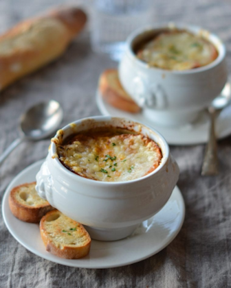

French onion soup

Description
This soup may be my all time favorite soup. It is comforting, warm and just a perfect meal
This is perfect soup becasue it is not difficult to prepare and you, your friends, and your family will love it.
Ingredients
- 6 large red or yellow onions
- 4 tablespoons extra virgin olive oil
- 2 tablespoons butter
- 1 teaspoon sugar
- Kosher salt
- 2 cloves garlic, minced
- 8 cups beef stock
- 1/2 cup dry vermouth or dry white wine
- 2 bay leaves
- 1/2 teaspoon dried thyme
- 1/2 teaspoon freshly ground black pepper
- 8 slices (1 inch thick) French bread or baguette
- 1 1/2 cups grated Gruyere
Steps
- Caramelize the onions In a 5 to 6 quart thick-bottomed pot, heat 3 tablespoons of olive oil on medium heat. Add the onions and toss to coat with the olive oil. Cook the onions, stirring often, until they have softened, about 15 to 20 minutes. Increase the heat to medium high. Add the remaining tablespoon of olive oil and the butter and cook, stirring often, until the onions start to brown, about 15 more minutes.
- Deglaze the pot with vermouth or wine add the wine or vermouth to the pot and scrape up the browned bits on the bottom and sides of the pot, deglazing the pot as you go.
- Add the stock, bay leaves, and thyme
- Toast the French bread slices
- To serve, ladle soup into a bowl and transfer one cheesy toast onto the top of each bowl of soup.